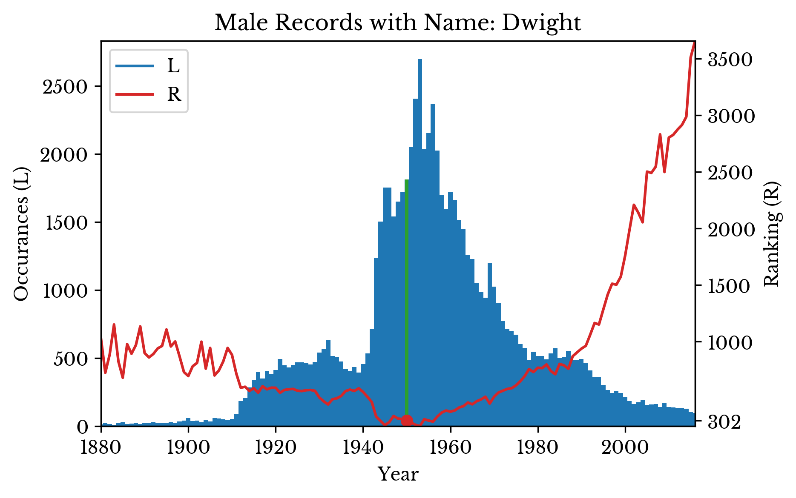

On Forename Popularity in the USA
Fri, 19 Jan 2018
Data Science, Data Visualization, Name Popularity, Statistics
In this chapter, forenames in the USA are considered. The United States Social Security Administration (SSA) makes available a dataset containing information about Social Security records. The dataset contains counts of the number of records that exist for a specific first name and birth year.For the Nation
Figure 1 shows the number of records and unique names per year. There are spikes in the number of records around 1910 and 1940. The total number of unique names increases progressively more rapidly into the 20th century. In the most recent several years, both trends reverse to an extent.
Figure 1: Total Number of Names and Records
Despite spikes in the number of records, name diversity increases more steadily. The result is that a large number of people born in the middle 20th century have common names. The most popular names for each year are shown in Figure 2.
{kind=link}
{kind=link}
{kind=link}
Figure 2: Most Popular Names Over Time
The number of occurrences and ranking of a particular name can be visualized over time. The distributions for the names "Nicholas", "Alice", and "Dwight" are shown in Figure 3. The green bar and red dot highlights the ranking at a specific birth year. A lower ranking indicates a more popular name, with 0 being the most popular name.
|  |  |
{kind=link}
{kind=link}
Figure 3: Occurrences and Popularity of Several Names
The graph for the name "Nicholas" shows an interesting trend. The number of occurrences of the name sharply declines from around the year 2000. The ranking of the name declines as well, but at a slower rate.
To investigate this trend, the number of occurrences of the 1st and 5th most popular names are computed for each year. The result is plotted in Figure 4 alongside the total number of records for each year.

Figure 4: Occurrences of Top Names
The total number of records and occurrences follow a similar pattern initially. The lines diverge around 1980. After this point, it requires fewer occurrences to be one of the top names. This is the reason that the ranking of the name "Nicholas" declines more slowly than its number of occurrences around the time.
The percentage of records accounted for by the top \(n\) names is computed for various values of \(n\). The result is shown in Figure 5.
Figure 5: Percentage of Records with Common Names
A small percentage of popular names represent the majority of records. The rapid increase in the number of names around 1910 reduces the percentage accounted for by the most popular names. The top names regain popularity in the middle century before declining into the 21st century.
Figure 6: Records with Common Names in 1950 and 2010
This trend is examined further by arranging the top four hundred names into groups of 100. The result is displayed in a pie chart. In 1950, the top 100 names represent almost 60% of names. In 2010, they represent less than half of that.
Next, the number of names in several of the top percentiles of popularity are computed. The result is shown in Figure 7. The rapid increase starting around 1990 indicates more diversity in the top percentiles.
Figure 7: Number of Names in Top Popularity Percentiles
The sharp increase in records around 1940 is not accompanied by a sharp increase in names. In fact, the opposite is true. The result is a large number of records with common names and few with rare ones.
Over the remainder of the century, preferences shift to more uncommon names as diversity increases. Many of the most common names of the 1950s are still popular, but they share an increasing amount of their popularity with less traditional ones. In the 21st century, it requires fewer occurrences to be one of the top names and the top percentiles of popularity contain more names than in the past.
Gender Differences
The numbers of male and female records are computed for each year. The result is shown in Figure 8. The chart shows a sizable imbalance between male and female records.
Figure 8: Count of Male and Female Records
There are several factors that may contribute to this imbalance. The first is that records with names that occur fewer than five times in a year are omitted. The second is that the data includes immigrants as well as natural born citizens. The effect of the first can be approximated while that of the second is more difficult.
Next, the percentage of records with common names is computed for each year and gender. A common name is defined as one of the top 100 names. The charts reveal that men are typically given more common names than women after 1910.
Figure 9: Percentage of Records with Common Names by Gender
Unfortunately, the dataset does not contain names that occur fewer than 5 times in the nation per year. However, the SSA also maintains statewide data. Names are excluded from the statewide data if they occur fewer than 5 times in each state. By taking the difference between the national and state data, the number of these rare names is approximated. The number of records missing from the state data for each gender is shown in Figure 10.
Figure 10: Records Missing in State Data
As can be seen, there are more women with names that are excluded from the state counts but included in the national counts due to their rarity. It seems reasonable that the imbalance in male and female records is largely a result of the relative prevalence of very rare female names.
Popularity by State
Next the statewide data is considered. The ratio of records to unique names is computed and displayed in a choropleth map. States with higher name diversity are shown in lighter colors.
Figure 11: Name Diversity by State in 2016
By making successive maps, the popularity of a name can be visualized over time. The popularity of the name Mary is shown in Figure 12. The name peaks in popularity in the middle 20th century before entering a decline.
Figure 12: Name Popularity over Time
The gender imbalance in each state is computed for records with a birth year of 2016. The imbalance is computed as the difference between the number of male and female records divided by the total number of records. The result is shown in a choropleth map in Figure 13. The map is similar to the map for name diversity.
Figure 13: Gender Imbalance Among Records by State in 2016
To investigate the similarity further, a scatter plot is constructed which plots gender imbalance against state name diversity. Next, a trend line is fit to the data. The \(R^{2}\) of the fit is 0.894 and the F-statistic is 419.9 with a corresponding p-value 2.8e-26.
Figure 14: Relationship Between Gender Imbalance and Name Diversity
There is clear evidence showing that states with more diverse names have more male records in the dataset. Further, there are more male records with common names than female records overall. Together, these facts support the notion that the gender imbalance is due to the omission of more female records than male records. It appears that more women have especially rare names than men.